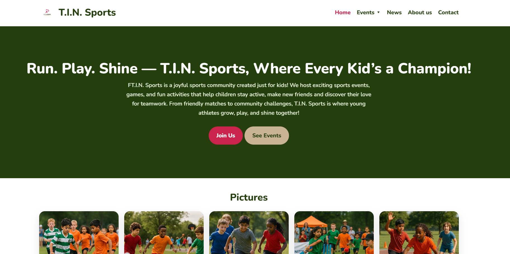
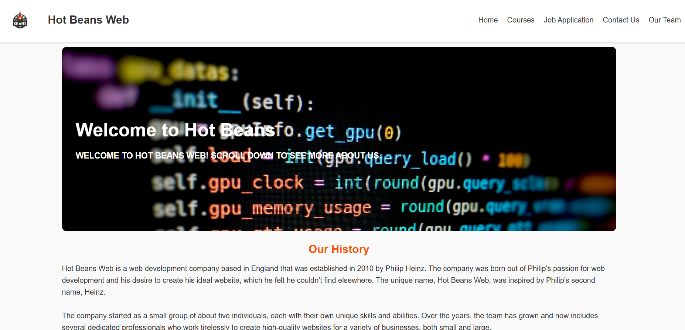
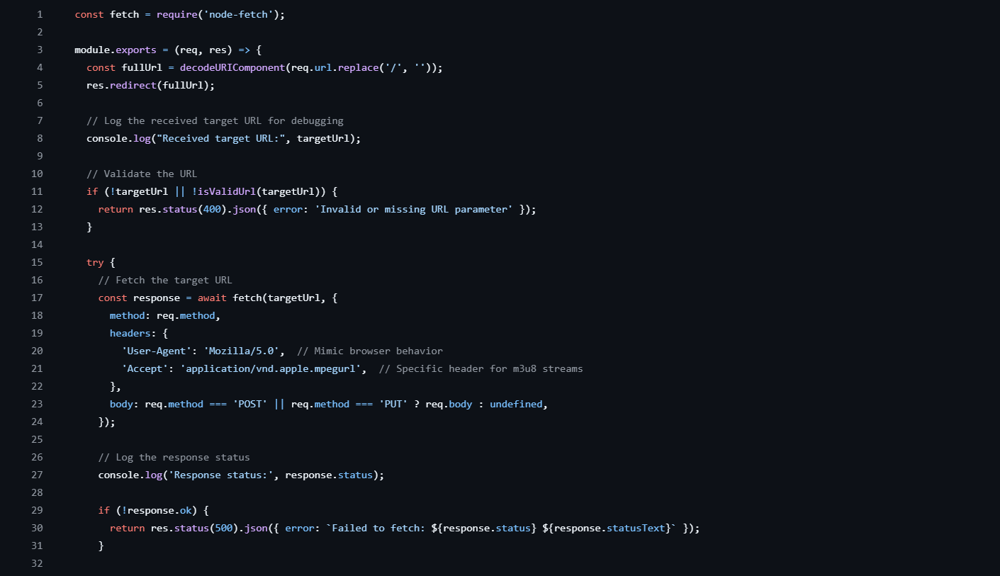

Sports Community Website
A multi-page responsive website designed for a children's sports community, featuring event listings and membership information.
Learn MoreI am a Computer Science (Cyber Security) student at Goldsmiths, University of London, and Campus Ambassador for the university. I am passionate about front-end web development, cybersecurity, and building accessible, modern digital experiences that combine technical precision with exceptional user experience.
I achieved a Triple Distinction* (D*D*D) — the highest possible BTEC grade — across all 13 units of my IT qualification at New City College, placing in the top national tier. My experience spans cybersecurity awareness delivery, peer mentoring, community digital support, and student leadership. I am bilingual in English and Bengali.
Goldsmiths, University of London
Specialising in Cyber Security with a focus on secure systems, ethical hacking principles, modern web security, and full-stack development. Simultaneously serving as Campus Ambassador for the university.
New City College, London
Achieved Triple Distinction* — the highest possible grade — across all 13 units, placing in the top national tier. Key units: Cyber Security & Incident Management, Big Data Analytics, Programming, Website Development, IT Project Management, Cloud Storage & Collaboration Tools, Data Modelling, 2D/3D Digital Graphics.
Rokeby School, London
Bengali Grade 9 — the highest possible grade, reflecting exceptional bilingual ability. Core subjects: Maths, English Language, Computer Science, Combined Science, and Design Technology.
Goldsmiths, University of London
New City College, London
Splash Community Trust, London
New City College, London
BTEC National Extended Diploma in IT · 2025
Highest possible grade across all 13 units — placing in the top national tier of students nationwide, demonstrating outstanding academic consistency and technical capability.
New City College, London · 2023 – 2025
Recognised for two consecutive years for outstanding service, professionalism, and contribution to the college community across student support, events, and IT initiatives.
Goldsmiths, University of London · 2026
Selected to officially represent Goldsmiths at university fairs, open days, and national outreach events — chosen from the student body to serve as a trusted face of the institution.

A multi-page responsive website designed for a children's sports community, featuring event listings and membership information.
Learn More
Responsive personal Web service Website built using HTML, CSS, and JavaScript, focusing on accessibility and modern UI design.
Learn More
A mini proxy script developed using JavaScript using node.js framework to bypass restrictions.
Learn MoreI typically respond within 24 hours.